Supervised and Unsupervised Learning Approaches
Fundamentals of Data Science
University of the Philippines Manila
Alysa Mariel G. Jayme
Kurt Benedict Wilbur B. Pua
Louis Conrad Andrei S. Tinio
Clinical background, research question, and four project goals
PCSPF cohort (n=878), target imbalance, distributions, and correlations
Data quality, outliers, VIF, scaling, and train-test split decisions
Cluster selection (k=3), PCA visualization, profiles, and survival overlay
Model tuning, test performance, ROC/AUC, and feature importance
Bridging supervised predictions with unsupervised cluster structure
Honest limitations, future work, and key takeaways
Pancreatic cancer remains one of the most lethal malignancies. Preoperative risk stratification helps surgical teams, patients, and families plan treatment intensity and supportive care.
Can routine preoperative blood tests and tumor markers predict 1-year survival in pancreatic cancer patients — and do the same features define clinically meaningful subgroups?
Train a tuned Random Forest to classify 1-year survival (survived >=1 yr vs died <1 yr) from 20 preoperative features. Report accuracy, macro F1, AUC-ROC, and per-class recall.
Apply K-Means (k=3) on scaled features to identify preoperative patient phenotypes. Profile clusters clinically and test survival association post hoc (chi-square).
Compare Gini feature importance with cluster-differentiating features. Bridge RF predicted probabilities across clusters to assess directional alignment.
Document every preprocessing choice and deliberate non-action (no SMOTE, no outlier removal, no transform). Use random_state=42 for split, tuning, and clustering reproducibility.
Table 1. Dataset Summary
| Item | Detail |
|---|---|
| Source | PCSPF Pancreatic Cancer Survival (Preoperative Features) |
| Patients | 878 |
| Raw columns | 24 |
| After cleaning | 21 (20 features + target) |
| Binary features | 2 (Sex, Abdominal Pain) |
| Continuous features | 18 (z-scored in released file) |
| Target | survival_label: 1 = survived >=1 yr; 0 = died <1 yr |
| Dropped | ID, Predict label 1, Predict label 0 (100% NaN) |
Surgical cohort with complete preoperative labs. Released continuous values are pre-standardized (z-scores).
Figure 1. Target distribution (Class 0 vs Class 1)
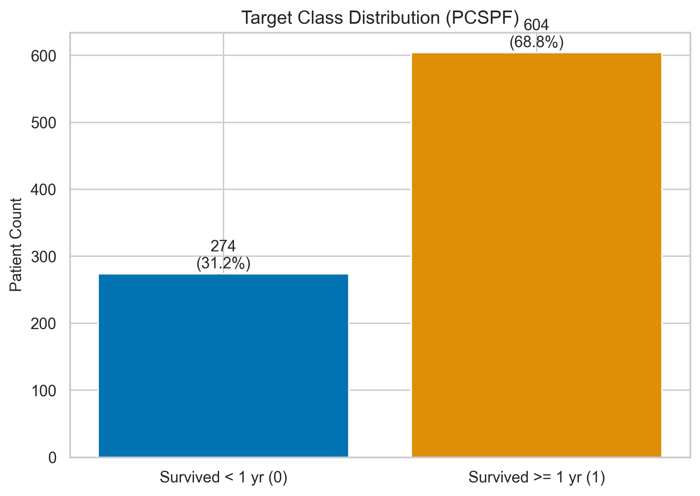
Source: PCSPF Capstone, n=878, Section 3.2
Moderate class imbalance (2.20:1). A majority-class classifier predicting 'survived' for everyone scores 68.8% accuracy without learning anything.
In this cohort, roughly 7 in 10 pancreatic cancer patients survived at least one year after surgery, while about 3 in 10 did not. That reflects both the severity of pancreatic cancer and the fact that surgical candidates are often selected patients - not the general population incidence of early mortality.
Figure 2. Histograms + KDE for 18 continuous features
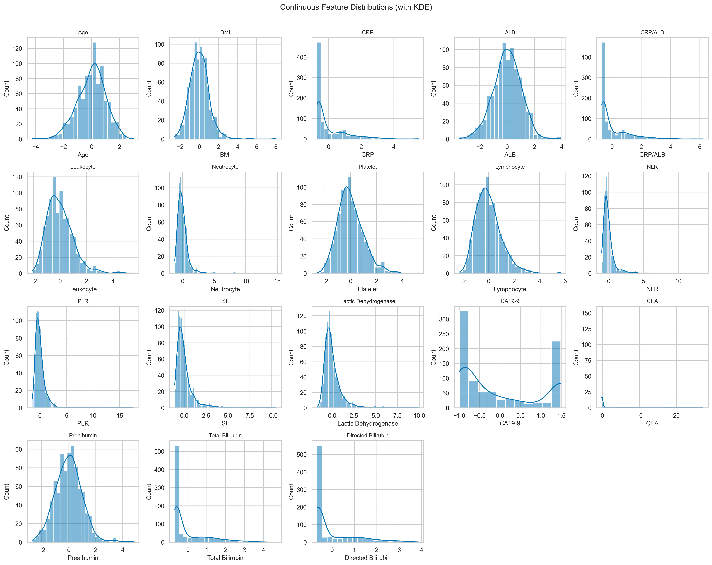
Source: PCSPF Capstone, n=878, Section 3.3
Right-skewed distributions on CA19-9, CRP, CEA, and bilirubin. Released file values are already z-scored (mean~0, std>=1).
Most tumor markers and inflammation labs have long right tails - a few patients with very high CA19-9, CRP, or bilirubin. Clinically, those extremes often reflect advanced obstructive jaundice, heavy tumor burden, or systemic inflammation rather than 'bad data points.'
Figure 3. Pearson correlation matrix (20 features + target)
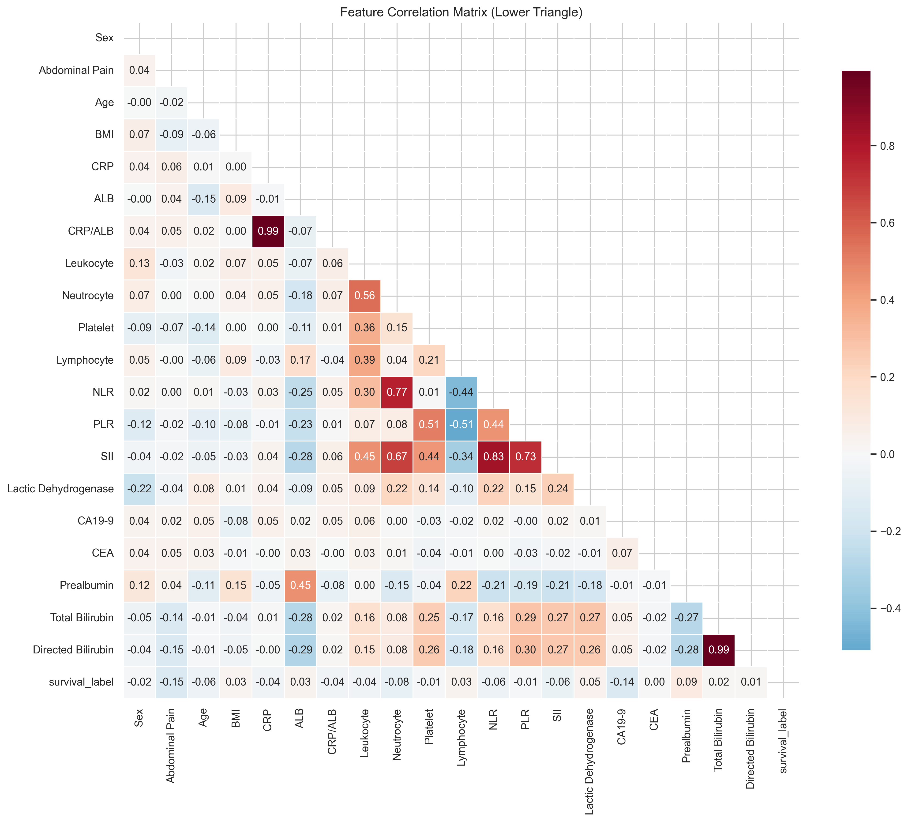
Source: PCSPF Capstone, n=878, Section 3.5
All feature-target |r| < 0.15. Strong red blocks among NLR, PLR, SII, CRP/ALB, and bilirubin pairs.
No single preoperative lab linearly predicts 1-year survival strongly - survival is influenced by many factors acting together (tumor biology, nutrition, inflammation, biliary obstruction). The tight correlation blocks among NLR, PLR, SII, and CRP/ALB reflect one underlying clinical story: systemic inflammatory response in advanced disease.
Figure 4. Top 10 mean differences by survival class
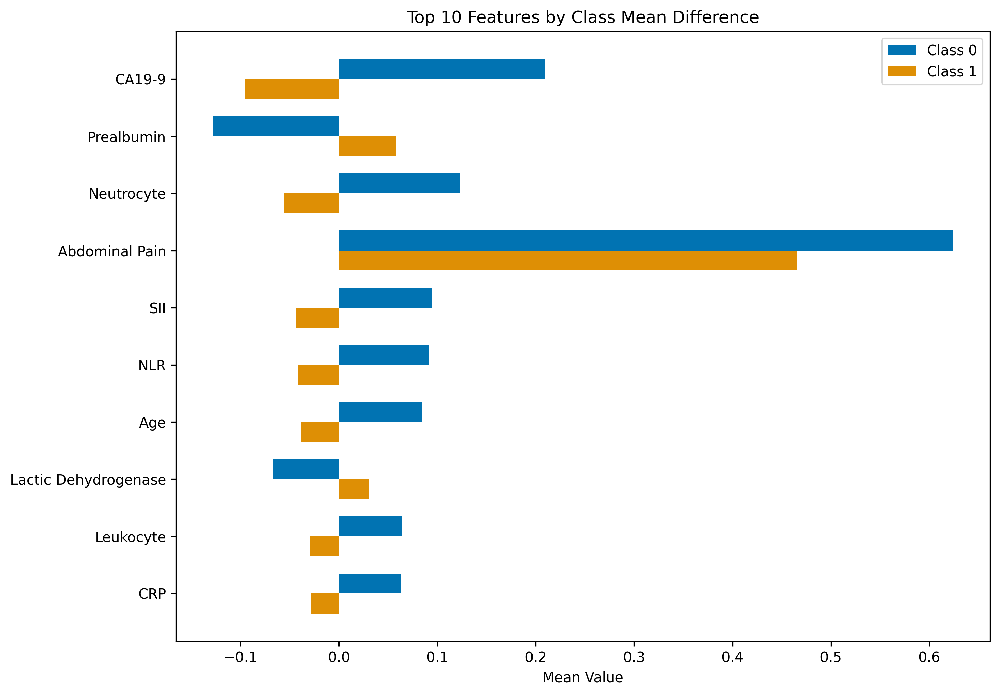
Source: PCSPF Capstone, n=878, Section 3.7
Largest gaps: Abdominal Pain, CA19-9, Prealbumin, inflammatory markers. Differences are visible but modest.
Patients who died within a year reported more abdominal pain and had higher CA19-9 with lower prealbumin - a pattern consistent with symptomatic, nutritionally depleted, higher-burden disease at presentation. These are clinically recognizable risk signals even though none dominates alone.
20 predictors + target after cleaning: 2 binary (Sex, Abdominal Pain) as integers; 18 continuous labs as float64. Confirmed before any modeling step.
Zero nulls across all 878 rows and 21 columns. Verified with isnull().sum(), df.info(), and df.describe() -- no imputation required.
0 duplicate patient records detected. Each row represents one unique surgical case with complete preoperative feature set.
Because the released PCSPF file is complete, we did not introduce synthetic values. This preserves the original clinical cohort without imputation bias.
Figure 5. Per-feature z-score boxplots with IQR outliers
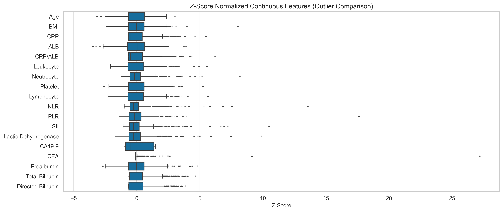
Source: PCSPF Capstone, n=878, Section 4.4
IQR rule (1.5×) on 18 continuous features
Outliers concentrate on CA19-9, CRP, CEA, and bilirubin - extreme lab values, not data errors.
The flagged outliers are exactly the markers that spike in aggressive pancreatic cancer: markedly elevated CA19-9 or CEA, high CRP from inflammation, and bilirubin from biliary obstruction. These patients are often the most clinically complex - not statistical noise.
Table 2. Top 8 VIF scores (all 20 in notebook Section 4.6)
| Feature | VIF | Level |
|---|---|---|
| CRP/ALB | 131.02 | High |
| CRP | 130.21 | High |
| Dir. Bilirubin | 77.61 | High |
| Tot. Bilirubin | 76.98 | High |
| SII | 18.30 | High |
| NLR | 12.38 | High |
| PLR | 8.21 | Moderate |
| Neutrocyte | 7.97 | Moderate |
NLR and PLR are standard preoperative indices — dropping them for VIF loses clinically validated markers.
Figure 6. Preprocessing decision register (Section 4.10)
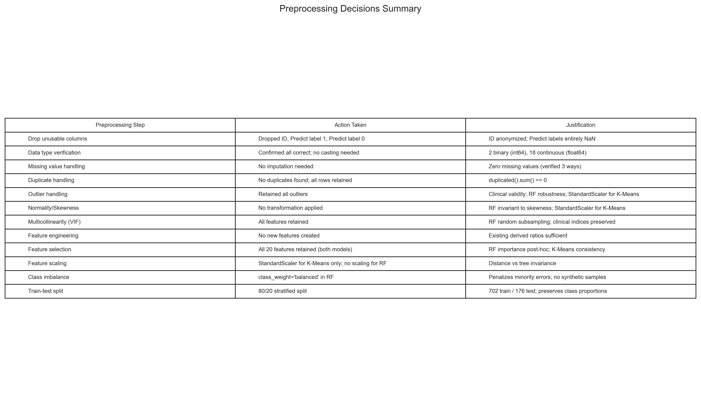
Source: PCSPF Capstone, n=878. Every row documents what we did and deliberately did not do.
Figure 7. Feature distributions before/after StandardScaler
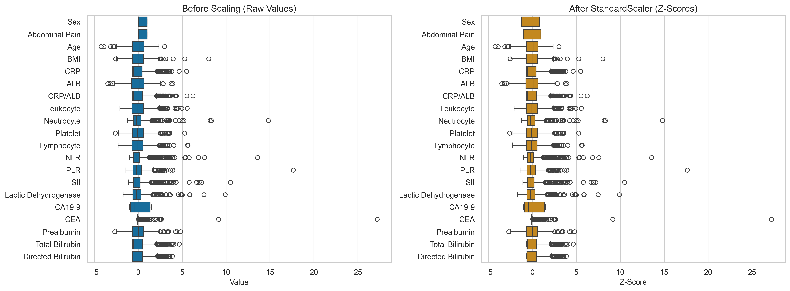
Source: PCSPF Capstone, n=878, Section 5.3
Table 3. Split and scaling parameters
| Setting | Value |
|---|---|
| Split | 80/20 stratified |
| Train / test | 702 / 176 patients |
| random_state | 42 |
| RF inputs | Unscaled X_train / X_test |
| K-Means inputs | StandardScaler on full X (878x20) |
| Class imbalance | class_weight='balanced' |
Features already near z-score scale; StandardScaler enforces mean=0, std=1 for K-Means Euclidean distance.
Scaling puts all labs on equal footing for grouping patients - so BMI does not overpower CA19-9 just because of unit differences.
Figure 8. Elbow method (inertia vs k)
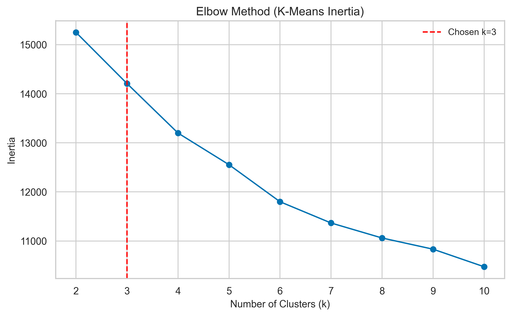
Source: PCSPF Capstone, n=878, Section 6.1
Figure 9. Silhouette score vs k
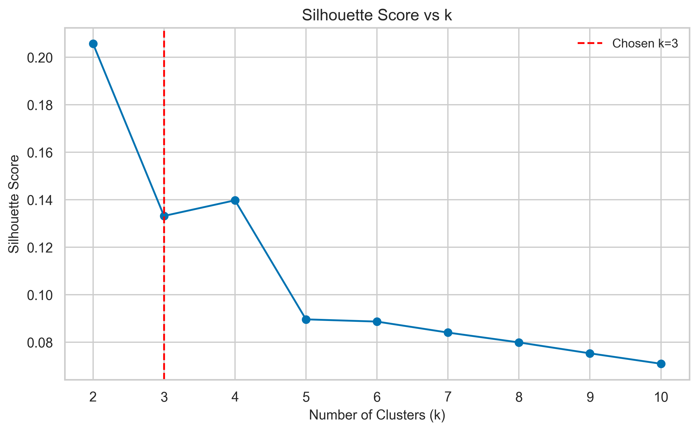
Source: PCSPF Capstone, n=878, Section 6.2
Figure 10. 2D PCA scatter colored by K-Means cluster
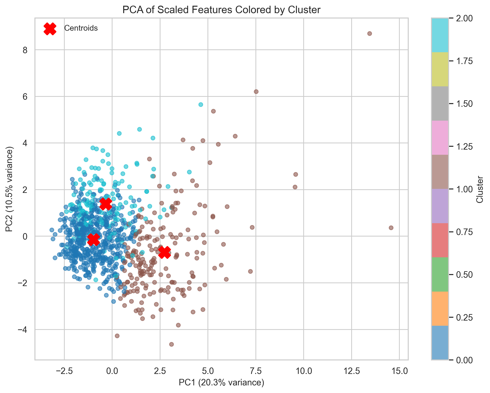
Source: PCSPF Capstone, n=878, Section 6.5
Table 4. Cluster summary
| Cluster | N | % cohort | Survival rate |
|---|---|---|---|
| 0 | 519 | 59.1% | 70.1% |
| 1 | 204 | 23.2% | 69.6% |
| 2 | 155 | 17.7% | 63.2% |
Three partially separated groups. PC1+PC2 = 30.8% variance - 69.2% of structure not visible in 2D.
In two dimensions, three patient clouds appear with overlap - mirroring how preoperative risk is a spectrum, not discrete boxes. Clustering was done in full 20-feature space; this plot is a simplified map for presentation, like projecting a 3D tumor scan onto a slide.
Figure 11. Z-scored mean features per cluster (heatmap)
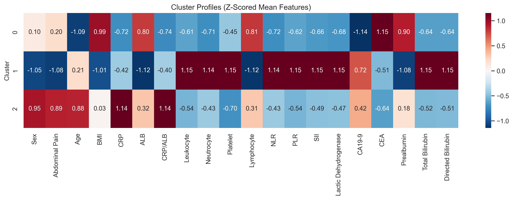
Source: PCSPF Capstone, n=878, Section 6.6
Cluster 0: lower inflammation, higher prealbumin - 'Stable/Low-Risk.' Cluster 1: elevated bilirubin, NLR, SII - 'Hepatobiliary Burden.' Cluster 2: highest CRP, CRP/ALB, abdominal pain - 'High-Inflammation.'
Cluster 0 looks like relatively well-nourished patients with less systemic inflammation - the profile you hope for before pancreatectomy. Cluster 1 resembles obstructive jaundice with elevated bilirubin and immune ratios.
Figure 12. Survival rates per cluster with chi-square test
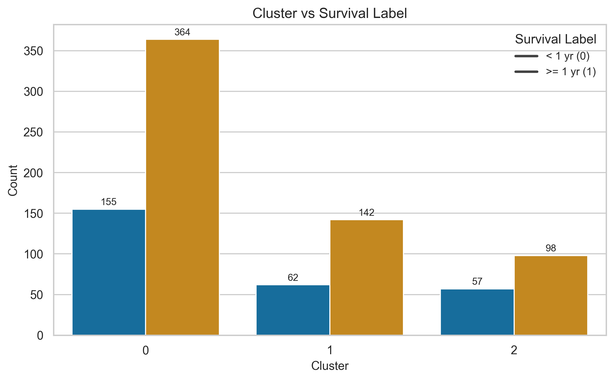
Source: PCSPF Capstone, n=878, Section 6.7
Cluster 2 directionally lowest survival but association NOT statistically significant. Negligible effect size.
High-inflammation Cluster 2 shows about 7 percentage points lower 1-year survival than Clusters 0 and 1 (63.2% vs ~70%) - the direction clinicians would expect - but the gap is not statistically confirmed. Preoperative labs alone cannot reliably stratify prognosis the way TNM staging can.
Table 5. Primary hyperparameters (f1_macro)
| Hyperparameter | Value |
|---|---|
| n_estimators | 100 |
| max_depth | 5 |
| min_samples_split | 10 |
| min_samples_leaf | 4 |
| class_weight | balanced |
| CV scoring | f1_macro (primary) |
| Best CV macro F1 | 0.579 |
Table 6. Tuning comparison (test set)
| Objective | Macro F1 | AUC | Cl-0 Recall |
|---|---|---|---|
| f1 binary (legacy) | 0.507 | 0.613 | 10.9% (6/55) |
| f1_macro (primary) | 0.550 | 0.563 | 36.4% (20/55) |
| recall_macro | 0.550 | 0.563 | 36.4% (20/55) |
Legacy f1 tuning hit 71.0% accuracy but 100% train overfit; f1_macro prioritizes balanced classes.
Figure 13. Confusion matrix (176-patient test set)
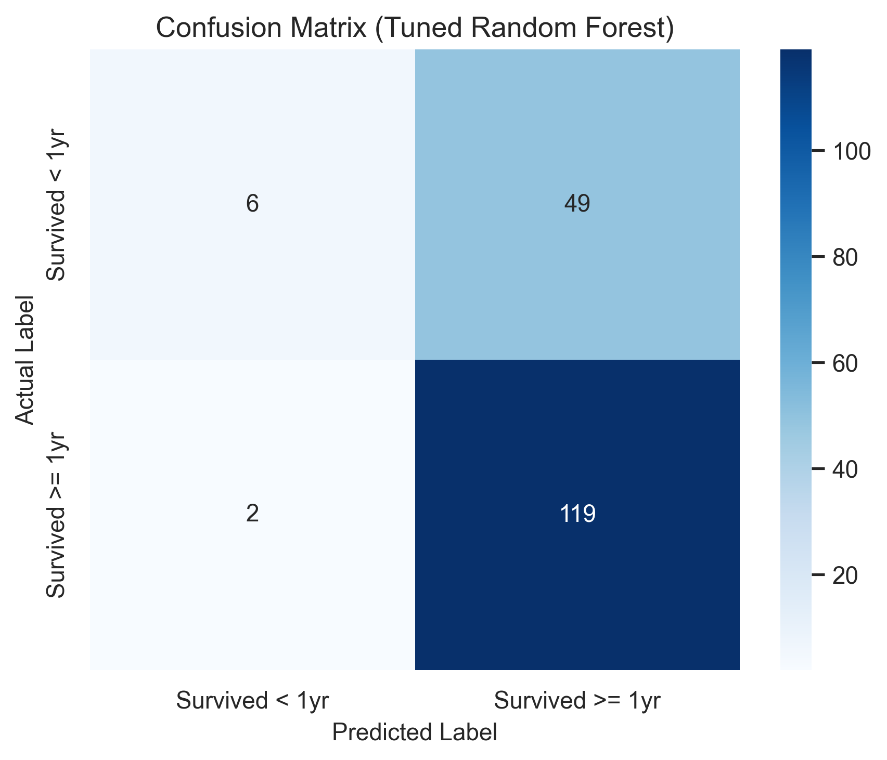
Source: PCSPF Capstone, n=878, Section 7.3
Figure 14. Per-class precision, recall, F1
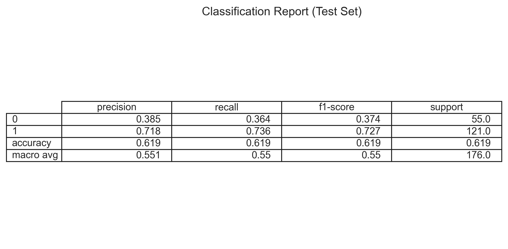
Source: PCSPF Capstone, n=878, Section 7.3
Macro-aligned tuning flags 20/55 high-risk patients (up from 6/55 under legacy f1 tuning). Still misses 35/55 — research-grade, not clinic-ready.
Figure 15. ROC curve with AUC = 0.563
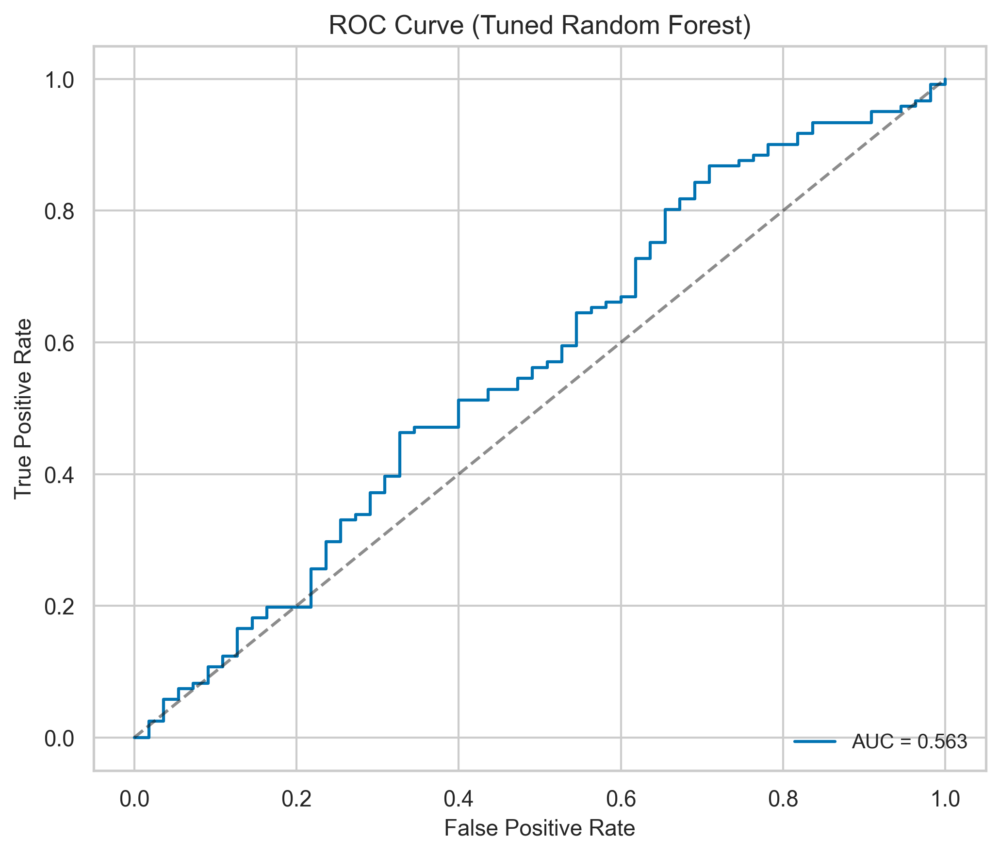
Source: PCSPF Capstone, n=878, Section 7.3
Better than random but below ~0.7 threshold often cited for clinical utility.
AUC 0.563 means if you pick one patient who died within a year and one who survived, the model ranks the higher-risk patient higher about 56% of the time - better than a coin flip, but far from the ~0.70+ discrimination oncologists want for treatment decisions.
Figure 16. All 20 Gini importances (top 5 highlighted)
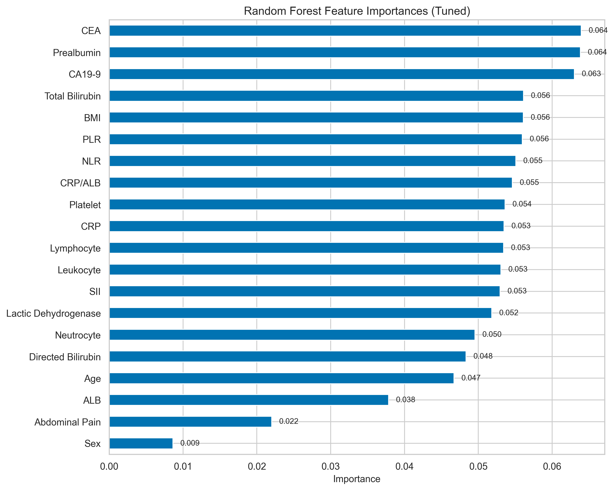
Source: PCSPF Capstone, n=878, Section 7.4
Importance spread across tumor markers, nutrition, and inflammation - no single dominant predictor.
CEA and CA19-9 - classic pancreatic tumor markers - rank highly, validating clinical intuition. Prealbumin reflects nutritional reserve; low prealbumin before surgery is a known poor prognostic sign.
Preoperative features carry limited but real signal for pancreatic cancer survival prediction.
Figure 17. RF importance vs cluster differentiation (top 10)
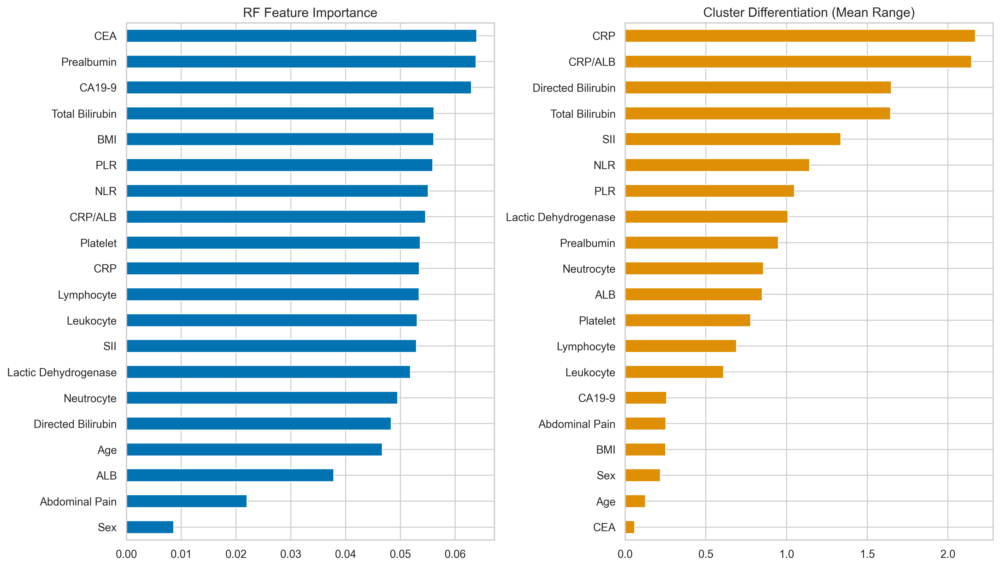
Source: PCSPF Capstone, n=878, Section 8.1
CEA, Prealbumin, CA19-9, inflammatory markers — supervised and unsupervised analyses converge on the same clinical themes.
Overlap in CEA, Prealbumin, CA19-9, and inflammatory markers - supervised and unsupervised analyses converge.
Two independent methods - one predicting survival, one grouping similar patients - both highlight the same clinical themes: tumor burden (CEA, CA19-9), nutritional status (prealbumin), and systemic inflammation. That convergence is medically coherent even though neither method achieves strong standalone performance.
Table 7. Predicted survival probability per cluster
| Cluster | N | Actual survival % | Mean predicted % | Difference |
|---|---|---|---|---|
| 0 | 519 | 70.13 | 70.42 | +0.29 |
| 1 | 204 | 69.61 | 67.29 | -2.32 |
| 2 | 155 | 63.23 | 62.32 | -0.91 |
Even a modest model ranks clusters coherently — high-inflammation Cluster 2 receives lowest predicted survival.
Lowest 1-year survival at 63.2%. Profile dominated by elevated inflammatory and tumor-burden markers. Tuned RF assigns a lower mean predicted probability (62.3%).
Highest observed survival at 70.1% with lower inflammation and higher prealbumin. Mean predicted probability is 70.4% — partial alignment between unsupervised and supervised views.
Features ranking highly in RF importance and cluster differentiation overlap on tumor markers, nutrition, and inflammation. Chi-square p = 0.2546: not significant, but directionally coherent.
Compare XGBoost/SVM; deploy best model with SHAP explanations.
Evaluate DBSCAN and hierarchical methods with survival validation.
Apply Yeo-Johnson before K-Means to reduce skewness effects.
Use RFE or LASSO for a minimal interpretable predictor set.
Test models on an independent hospital cohort.
Add TNM staging, resectability, and treatment variables.
Extend to Cox proportional hazards and Kaplan-Meier curves.
Compare SMOTE/ADASYN against class_weight='balanced'.
Apply SHAP or LIME for individualized risk review.
Obtain unbiased hyperparameter tuning estimates.
RF (f1_macro tuned): 61.93% test accuracy, AUC 0.563, macro F1 0.550. Top features: CA19-9, CEA, Prealbumin.
K-Means k=3 identified three clinical phenotypes. Cluster 2 lowest survival (63.2%). Chi-square p = 0.2546.
Supervised and unsupervised analyses converge on tumor markers, nutrition, and inflammation.
Preoperative features carry limited but real signal for pancreatic cancer survival prediction. Staging and treatment data needed for clinical utility.
Questions & Discussion
Alysa Mariel G. Jayme
Kurt Benedict Wilbur B. Pua
Louis Conrad Andrei S. Tinio
Appendix slides available for detailed Q&A backup
Figure 18. PCA scatter colored by true survival label
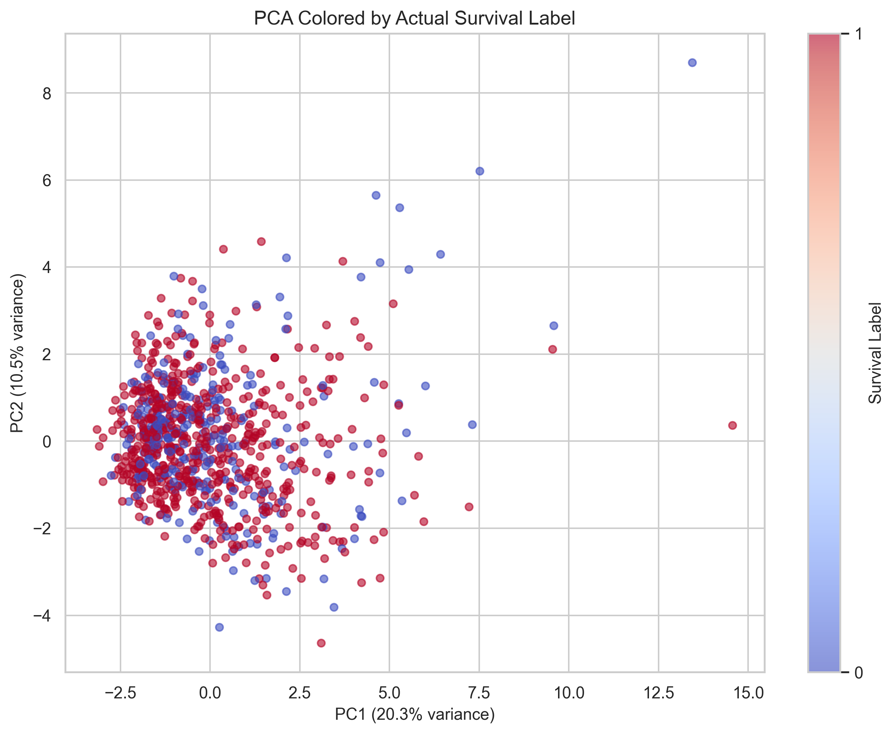
Source: PCSPF Capstone, n=878, Section 6.8
Survival classes overlap heavily in 2D - consistent with weak linear signal and modest AUC.
Patients who died within a year (Class 0) are intermixed with survivors in the plot - exactly what you see in practice when two patients with similar preoperative labs have different outcomes because of tumor stage, resection margin, or postoperative complications not in this dataset.
Figure 19. Full preprocessing decision register
Source: PCSPF Capstone, n=878, Section 4.10
Figure 20. Per-class precision, recall, F1
Source: PCSPF Capstone, n=878, Section 7.3
Table 8. Complete VIF scores
Table 9. Complete VIF scores (features 1-10)
| Feature | VIF | Level |
|---|---|---|
| CRP/ALB | 131.02 | High |
| CRP | 130.21 | High |
| Dir. Bilirubin | 77.61 | High |
| Tot. Bilirubin | 76.98 | High |
| SII | 18.30 | High |
| NLR | 12.38 | High |
| PLR | 8.21 | Moderate |
| Neutrocyte | 7.97 | Moderate |
| Platelet | 3.56 | Low |
| Lymphocyte | 3.29 | Low |
Table 10. Complete VIF scores (features 11-20)
| Feature | VIF | Level |
|---|---|---|
| Leukocyte | 2.48 | Low |
| ALB | 1.89 | Low |
| Sex | 1.61 | Low |
| Abdominal Pain | 1.58 | Low |
| Prealbumin | 1.38 | Low |
| Lactic Dehydrogenase | 1.22 | Low |
| Age | 1.10 | Low |
| BMI | 1.06 | Low |
| CA19-9 | 1.03 | Low |
| CEA | 1.01 | Low |
Table 11. Supervised benchmark (Section 7.5)
| Model | Test Acc | Macro F1 | AUC | Cl-0 Recall |
|---|---|---|---|---|
| RF (f1_macro tuned) | 61.9% | 0.550 | 0.563 | 36.4% (20/55) |
| SVM RBF | 61.9% | 0.590 | 0.622 | 56.4% (31/55) |
| Logistic Regression | 55.1% | 0.539 | 0.599 | 61.8% (34/55) |
| Gradient Boosting | 63.6% | 0.482 | 0.581 | 14.5% (8/55) |
RF retained for Gini importance - f1_macro tuning improved macro F1 vs legacy f1 (0.507).
Table 12. Unsupervised benchmark (Section 6.0, k=3)
| Method | Chi-sq p | Assignment | Selected? |
|---|---|---|---|
| K-Means | 0.2546 | 100% | Yes |
| GMM | 0.5259 | 100% | Benchmark |
| Ward (k=3) | 0.6478 | 100% | Benchmark |
| DBSCAN | 0.0090 | ~49% | Rejected |
Same train-test split (702/176), random_state=42 — from notebook Section 7.5
Figure 21. Test accuracy, macro F1, AUC-ROC, and class-0 recall across four classifiers
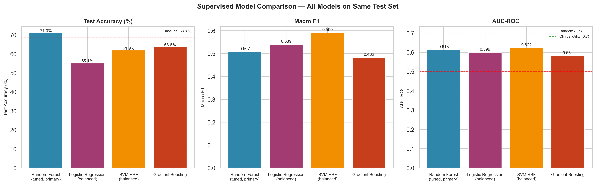
Source: PCSPF Capstone, n=878, Section 7.5
K-Means vs GMM vs Ward vs DBSCAN on scaled features (878 patients) — notebook Section 6.0
Figure 22. Silhouette, chi-square p-value, and survival spread at k=3
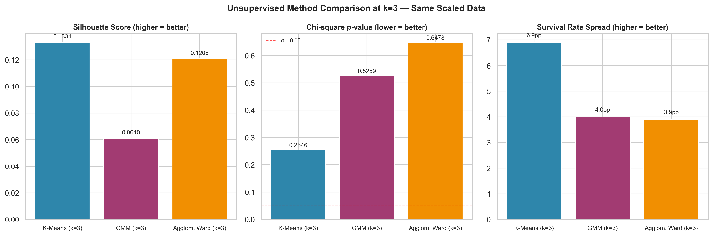
Source: PCSPF Capstone, n=878, Section 6.0
Table 13. Full preprocessing register
| Step | Action | Justification |
|---|---|---|
| Drop ID, Predict labels | Removed 3 columns | ID anonymized; Predict columns 100% NaN — unusable labels. |
| Missing values | No imputation | Zero nulls after column drop; verified three ways. |
| Duplicates | None removed | 0 duplicate rows confirmed. |
| Outliers | Retained all | IQR/z-score documented; extremes are clinically severe patients. |
| Normality transform (Yeo-Johnson) | Not applied | RF rank-invariant; StandardScaler sufficient for K-Means. |
| Multicollinearity (VIF) | Retain all 20 features | RF random feature subsampling; ratio features clinically validated. |
| Feature engineering | None added | NLR, PLR, SII, CRP/ALB already in dataset. |
| Feature selection | All 20 retained | Same set for RF and K-Means; importance post-hoc. |
| SMOTE | Not used | class_weight='balanced' preferred; real patients only. |
| RF scaling | None | Tree splits are scale-invariant. |
| K-Means scaling | StandardScaler on full X (878×20) | Euclidean distance requires comparable scales. |
| Train-test split | 80/20 stratified, seed=42 | 702 train / 176 test; proportions preserved. |
Legacy f1 (binary) vs primary f1_macro — same split (702/176), random_state=42
Table 14. Performance comparison (held-out test set)
| Metric | Legacy f1 | Primary f1_macro | Better on |
|---|---|---|---|
| Test accuracy | 71.02% | 61.93% | Legacy |
| vs 68.8% majority baseline | +2.27 pp | -6.87 pp | Legacy |
| Train accuracy | 100.0% | 85.8% | Primary |
| Overfit gap (train - test) | 29.0 pp | 23.8 pp | Primary |
| Macro F1 (test) | 0.507 | 0.550 | Primary |
| AUC-ROC (test) | 0.613 | 0.563 | Legacy |
| Class-0 recall (test) | 10.9% (6/55) | 36.4% (20/55) | Primary |
| CV score (GridSearch) | 0.809 (binary F1) | 0.579 (macro F1) | — |
Table 15. Best hyperparameters from GridSearchCV
| Setting | Legacy f1 | Primary f1_macro |
|---|---|---|
| GridSearch scoring | f1 (binary / class 1) | f1_macro (primary) |
| Param grid | Legacy (108 combos) | Regularized (135 combos) |
| n_estimators | 300 | 100 |
| max_depth | 15 | 5 |
| min_samples_split | 2 | 10 |
| min_samples_leaf | 1 | 4 |
Tuning aligns with our evaluation metric under class imbalance. Primary model improves macro F1 and class-0 recall (20/55 vs 6/55) with a smaller overfit gap, at the cost of test accuracy below the 68.8% majority baseline.
Stretch objective recall_macro selected the same params as f1_macro on this grid (Section 7.2).